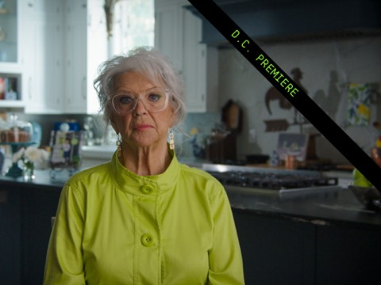

Archives & history
Archival footage, historical investigations, memory.
5 films · 5 sessions · 34 people
Often together with: Documentary craftRace & civil rightsPublic records & FOIADemocracy & electionsSurveillance & privacyWar, conflict & the military
Films
 BombshellBen Loeterman2025 · 82 min
BombshellBen Loeterman2025 · 82 min
Canceled: The Paula Deen StoryBilly Corben2025 · 103 min- MLK/FBISam Pollard2020 · 104 min
 Bully. Coward. Victim. The Story of Roy CohnIvy Meeropol2019 · 98 min
Bully. Coward. Victim. The Story of Roy CohnIvy Meeropol2019 · 98 min Desert OneBarbara Kopple2019 · 108 min
Desert OneBarbara Kopple2019 · 108 min
Sessions
- 2026 · Fri Nov 6 · 12:15pmPanelFaked, Erased, Distorted: Does the Record Matter?Swapneel Mehta, Yvonne Ng, Sam Benstead, Mark Graham, Sig Libowitz
- 2026 · Sat Nov 7 · 11:30amWorkshopRestoring Reality: A Wayback Machine Deep DiveMark Graham
- 2026 · Sat Nov 7 · 10:00amWorkshopThe People’s Archive: What’s In It, How to Use ItBonnie Rowan, Marisa Fox, Doug Block, Lisa Warwick
- 2024 · Fri Nov 8 · 1:00 PMPanel · DX²Mining and Contributing to Archives: Crafting the Future of Documentary StorytellingMacky Alston, Selina Lewis Davidson, Gaia de Simoni, Ben Loeterman, Teresa Murphy, Rachel Antell
- 2021Screening event<em>ATTICA</em> REVISITEDVernal Coleman, Traci A. Curry (co-), Stanley Nelson
People most involved
 Ben LoetermanPanelist, filmmaker · 2 editions, 2024–2025
Ben LoetermanPanelist, filmmaker · 2 editions, 2024–2025 Gaia de SimoniPanelist, filmmaker · 2 editions, 2024–2025
Gaia de SimoniPanelist, filmmaker · 2 editions, 2024–2025 Billy CorbenFilmmaker, panelist · 2 editions, 2024–2025
Billy CorbenFilmmaker, panelist · 2 editions, 2024–2025 Mark GrahamPanelist · 2026
Mark GrahamPanelist · 2026- Barbara KoppleFilmmaker · 2019
- David AaronFilm subject · 2019
- Kevin HermeningFilm subject · 2019
- Wade IshimotoFilm subject · 2019
- John LimbertFilm subject · 2019
- Michael MetrinkoFilm subject · 2019
- Gerald RafshoonFilm subject · 2019
- James Q. RobertsFilm subject · 2019
- Ed SeiffertFilm subject · 2019
- Cyntia SeiffertFilm subject · 2019
- Ivy MeeropolFilmmaker, panelist · 2 editions, 2019–2025

- Paula DeenFilm subject · 2025
- Robin GivhanModerator · 2025
- Sam PollardFilmmaker · 2020
 Macky AlstonFilmmaker, panelist · 2024
Macky AlstonFilmmaker, panelist · 2024
 Teresa MurphyPanelist · 2024
Teresa MurphyPanelist · 2024
 Bonnie RowanPanelist · 2026
Bonnie RowanPanelist · 2026 Marisa FoxPanelist, filmmaker · 2026
Marisa FoxPanelist, filmmaker · 2026 Doug BlockPanelist · 2026
Doug BlockPanelist · 2026 Lisa WarwickPanelist · 2026
Lisa WarwickPanelist · 2026 Swapneel MehtaPanelist · 2026
Swapneel MehtaPanelist · 2026 Yvonne NgPanelist · 2026
Yvonne NgPanelist · 2026 Sam BensteadFilmmaker, panelist · 2026
Sam BensteadFilmmaker, panelist · 2026 Sig LibowitzModerator, panelist, workshop leader · 3 editions, 2024–2026JHU AAP Graduate Film and Media Program
Sig LibowitzModerator, panelist, workshop leader · 3 editions, 2024–2026JHU AAP Graduate Film and Media Program- Vernal ColemanPanelist · 2021
 Traci A. Curry (co-)Filmmaker, panelist · 2021
Traci A. Curry (co-)Filmmaker, panelist · 2021 Stanley NelsonFilmmaker, panelist · 2021
Stanley NelsonFilmmaker, panelist · 2021